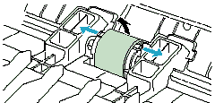
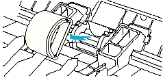
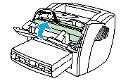
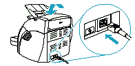
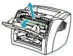
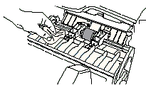

This procedure describes how to clean the pickup roller, toner cartridge area, and the media path of the HP 1200 printer.
Before changing printer parts because of printer problems, cleaning a specific area of the printer can enable the printer to function correctly.
During the printing process, paper, toner, and dust particles can accumulate inside the printer. Over time, this buildup can cause print quality problems, such as toner specks or smearing. To correct and prevent these types of problems, clean the toner cartridge area and the printer media path.
Remove the pickup roller.
Unplug the power cord from the printer, and allow the printer to cool.
Open the toner cartridge door and remove the toner cartridge.
Locate the pickup roller.
Release the small, white tabs on each side of the pickup roller by pushing them away from the roller, and then rotate the pickup roller toward the front.

Gently pull the pickup roller up and out.

Clean the pickup roller.
Dampen a lint-free cloth in isopropyl alcohol, and scrub the roller.
Warning: Alcohol is flammable. Keep the alcohol and the cloth away from an open flame. Allow the alcohol to dry completely before closing the printer and plugging in the power cord.
Using a dry, lint-free cloth, wipe the pickup roller to remove loosened dirt.
Allow the pickup roller to dry completely before reinstalling it in the printer.
Install the pickup roller.
Position the pickup roller in the slot.
Circular and rectangular pegs on each side prevent incorrect positioning of the pickup roller.
Rotate the top of the pickup roller into position until the white tabs on each side of the roller snap the roller into place.
Reinstall the toner cartridge, and close the toner cartridge door.

Plug in the printer to power it back on.
Clean the toner cartridge area.
The toner cartridge area does not need to be cleaned often. However, cleaning this area can improve the quality of printed sheets.
Disconnect the printer from the power source.
Caution: Before cleaning the printer, disconnect it from the power source and wait for the printer to cool.
Note: Use the on/off switch on printers operating on 220 V AC.

Open the toner cartridge door and remove the toner cartridge
Caution: To prevent damage to the toner cartridge, do not expose it to light. Cover the toner cartridge with a piece of paper during removal.
Caution: Do not touch the transfer roller (the black, spongy roller that sits beneath the toner cartridge). Skin oils could cause print-quality problems. Use the cleaning brush (if the printer has one) to clean the mirror; refer to the user guide supplied with the printer.

Wipe the media path area and the toner cartridge cavity with a dry, lint-free cloth.
Caution: Use only a dry, lint-free cloth to remove dust and toner. Using a vacuum or other device to clean inside the product can damage it.

Replace the toner cartridge, and close the toner cartridge door.
Plug the power cord into the printer.
Clean the printer media path.
If you are experiencing toner specks or dots on the printouts, clean the printer media path. This process uses a transparency to remove dust and toner from the media path. Do not use bond or rough paper.
Load a transparency in the priority input tray
Confirm that the printer is in the Ready state.
Press and hold the
Go button for ten seconds. The transparency feeds slowly through the printer. Discard the transparency.
Note:
After holding the
Go button for ten seconds, each of the three printer lights will blink until the cleaning process is complete.
If transparency film is unavailable, use paper, but perform the procedure two or three times to make sure the printer media path is cleaned.